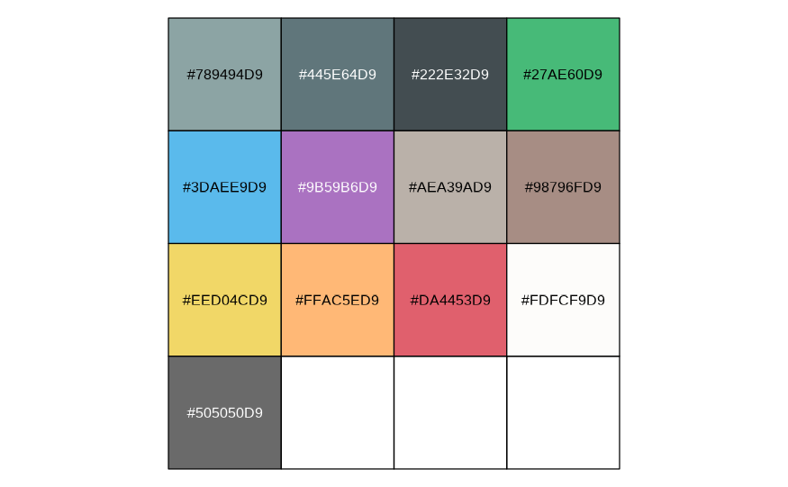
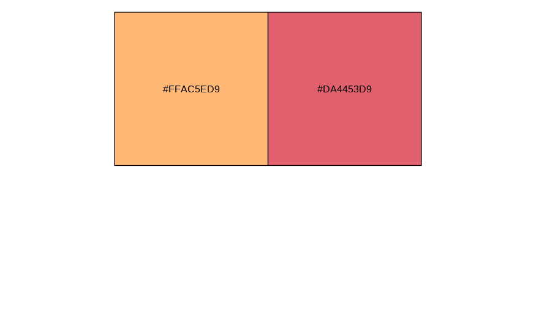

Color palette extracted from the active Bootstrap theme. By default colors are read from an external _brand.yml configuration file (or uses this package built-in brand).
Usage
pal(x = NULL, alpha = 0.85, named = TRUE)
Arguments
- x
Color index or name(s), skip to return the entire color palette
- alpha
transparency (default: 0.85)
- named
keep color names (default: TRUE)
Value
A vector of (named) hex color codes extracted from Bootstrap branding
Examples
scales::show_col(pal())

scales::show_col(pal(c("orange", "red")))
